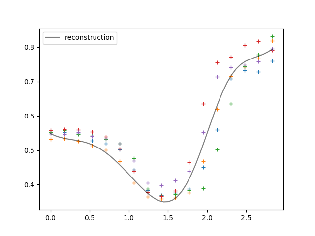
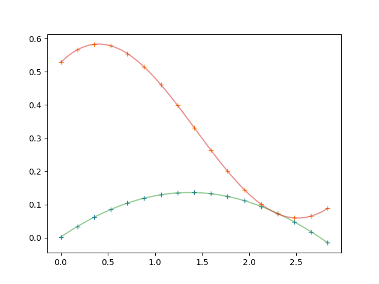

Note
Click here to download the full example code
Mocap Data¶
Simple example.
import numpy as np
import matplotlib.pyplot as plt
from pydygp.linlatentforcemodels import MLFMAdapGrad
from pydygp.pydygp_examples import MocapExample
from pydygp.liealgebras import so
from pydygp.linlatentforcemodels import MLFMAdapGrad
from pydygp.probabilitydistributions import Normal
from sklearn.gaussian_process.kernels import RBF
from scipy.interpolate import interp1d
Data = MocapExample.load_data('lhumerus')
motions = [str(i) for i in range(1, 6)]
tt = Data['times']
Y = np.column_stack([Data[m].T.ravel() for m in motions])
mlfm = MLFMAdapGrad(so(4), R=2, lf_kernels=[RBF(),]*2)
# Define the priors
beta_prior = Normal(scale=5)*((mlfm.dim.R+1)*mlfm.dim.D)
map_res = mlfm.fit(tt, Y,
beta_prior=beta_prior,
logtau_is_fixed=False)
fig = plt.figure()
for k in range(mlfm.dim.K):
ax = fig.add_subplot(2, 2, k+1)
for m in motions:
ax.plot(Data['times'], Data[m][:, k], '+')
Demonstrate the reconstruction¶
ttd = np.linspace(tt[0], tt[-1], 50)
u = [interp1d(tt, g, kind='cubic', fill_value='extrapolate')
for g in map_res.g]
x0 = sum(Data[m][0, :] for m in motions) / len(motions)
reconstruction, _ = mlfm.sim(x0, ttd, beta=map_res.beta, latent_forces=u)
fig, ax = plt.subplots()
for m in motions:
ax.plot(Data['times'], Data[m][:, 0], '+')
ax.plot(ttd, reconstruction[:, 0], 'k-', alpha=0.5, label='reconstruction')
ax.legend()
fig2, ax2 = plt.subplots()
ax2.plot(tt, map_res.g.T, '+')
Eg, SDg = mlfm.predict_lf(ttd, return_std=True)
for eg in Eg:
ax2.plot(ttd, eg, '-', alpha=0.5)
plt.show()
- 
- 
Total running time of the script: ( 0 minutes 53.605 seconds)